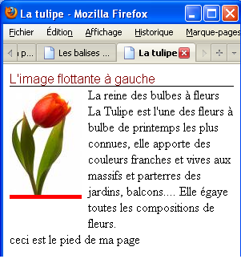

CSS 3 - Le positionnement
Introduction
Nous avons vu au chapitre précédent le modèle de boîtes et
plus particulièrement comment modifier la hauteur, la largeur,
l'espacement de ces boîtes. Nous allons maintenant voir comment vont
se positionner ces boîtes dans une page HTML et également comment
intervenir sur ce positionnement.
En-ligne et en bloc
A l'origine en HTML4, on distinguait 2 types de balises de structure
: le type en-ligne ou le type bloc.
Les éléments de type bloc s'affichent toujours comme s'il y
avait un saut de ligne avant et après, tandis que les éléments de
type en-ligne s'affichent dans le cours du texte de la page. En
bref, les éléments de type bloc constituent des blocs tandis que les
éléments en-ligne sont insérés dans une ligne.
Les éléments de rendu "bloc" servent à distinguer les parties
entières de texte, comme des titres, des paragraphes, des listes,
des citations, etc. Voici une liste des éléments de type bloc : DIV, P, H1...H6, UL, OL, TABLE, PRE, FORM, BLOCKQUOTE,
etc.
Les éléments en-ligne sont prévus pour rester dans le texte pour
l'enrichir (lien hypertexte, emphase, renforcement, etc.). Voici une
liste des éléments de type en-ligne : SPAN,
EM, Q, A, IMG, BR, INPUT, etc.
Les éléments de type bloc se placent toujours l'un en dessous de
l'autre par défaut. Par exemple: une suite de paragraphes (balise <p>) ou les éléments d'une liste (balise
<li>). Par ailleurs, un élément de
type bloc occupe automatiquement, par défaut, toute la largeur
disponible dans son conteneur.
Les éléments de type en-ligne se placent toujours l'un à côté de
l'autre afin de rester dans le texte. Par exemple : la mise en
évidence d'une partie de texte à l'aide de la balise <em>.
Prenons l'exemple d'une image qu'on insère dans un document (.doc)
de Word (Microsoft); on peut choisir dans les propriétés de l'objet
si on désire que l'image apparaisse dans le texte ou comme étant un
élément séparé:
| Une image insérée en-ligne : |
Une image insérée comme un bloc : |
| Mon image apparaît dans le texte. Vous
êtes bienvenus dans ce cours!
|
Mon image apparaît comme un bloc séparé.
Vous êtes bienvenus dans ce cours!
|
Chaque navigateur possède une feuille de styles
par défaut dans lequel il définit l'affichage en bloc ou en-ligne
des éléments HTML. Voici donc une raison pour laquelle le rendu HTML
peut différer d'un navigateur à un autre. Maintenant pour les
éléments les plus courants, vous ne verrez pas de différence (ouf
!), les paragraphes sont toujours affichés en bloc par défaut quel
que soit le navigateur utilisé.
 Il faut
savoir qu'en HTML5 le typage des éléments HTML en bloc ou en-ligne
n'est plus d'actualité. Le navigateur possède une feuille de style par défaut dans laquelle
chaque élément HTML est défini en ligne ou en bloc ou encore en table via la propriété display (voir ci-dessous).
Le développeur Web, quant à lui, peut utiliser cette propriété pour modifier le comportement par défaut donné
par le navigateur. Un élément HTML ayant donc un rendu par défaut en ligne peut très bien devenir un bloc et vice-versa.
Il faut
savoir qu'en HTML5 le typage des éléments HTML en bloc ou en-ligne
n'est plus d'actualité. Le navigateur possède une feuille de style par défaut dans laquelle
chaque élément HTML est défini en ligne ou en bloc ou encore en table via la propriété display (voir ci-dessous).
Le développeur Web, quant à lui, peut utiliser cette propriété pour modifier le comportement par défaut donné
par le navigateur. Un élément HTML ayant donc un rendu par défaut en ligne peut très bien devenir un bloc et vice-versa.
Le positionnement des boîtes
Pour afficher une page web, le navigateur interprète le flux
des éléments de type bloc de manière séquentielle, c-à-d du début à
la fin du fichier HTML en les affichant au fur et à mesure, les
blocs étant placés les uns en dessous des autres, séparés par une
ligne (fictive). Les éléments en ligne quant à eux sont placés à la
queue-leu-leu sur la même ligne, selon leur ordre d'apparition.
Il est néanmoins possible de modifier cet affichage par défaut
(statique) en spécifiant un positionnement différent : absolu (absolute)
, relatif (relative)
ou fixe (fixed)
. Dans chacun de ces modes, le positionnement de la boîte peut être
spécifié pour l'un ou l'autre des coté : top
(coté supérieur de la boîte par rapport au coté supérieur de
l'élément de réference), bottom (coté
inférieur), right (coté droit) et left (coté gauche), l'élément de référence
dépendant du type de positionnement. Il est déconseillé d'utiliser
des valeurs négatives car certains navigateurs les interprêtes de
manière personnelle.
La manipulation de ces positionnements peut être délicate car
elle risque de produire des recouvrements de blocs.
Une autre manière de positionner des éléments d'une page HTML est
d'utiliser le mode flottant (float)
qui permet de construire des menus, de créer une colonne, etc.
Positionnement absolu (position : absolute)
Le positionnement absolu est calculé à partir des côtés du
document. Par exemple, la combinaison des propriétés CSS
position:absolute; et left:10%;
va déplacer le bloc concerné par ce style de 10% par rapport au coté
gauche du document.
Positionnement relatif (position : relative)
De manière similaire, le positionnement relatif est calculé à
partir de l'élément bloc précédant.
Positionnement fixe (position : fixed)
Le positionnement fixe est calculé à partir du coin supérieur
gauche de la fenêtre du navigateur.
Positionnement flottant (float : left ou right)
Le positionnement flottant permet de modifier le
positionnement statique des éléments pour "faire flotter" les
éléments à gauche
float:left;
ou à droite
float:right;
Dans l'exemple suivant, l'image est positionnée à gauche.
| La CSS : |
L'affichage : |
div#header {
color : maroon;
font-family : sans-serif;
border-bottom : 1px solid black;
}
div#footer {
color : black;
clear : left;
}
div#texte {
margin-left : 25%;
}
div#image {
background-color : red;
float:left ;
width : 20%;
}
|
 |
Dans cet exemple,
- la propriété float : left; de
l'élément image indique que l'élément doit être flottant à
gauche et placé hors du flux normal; il est important de lui donner
une dimension grâce à la propriété width
: 20%; pour lui fixer une taille fixe, en rapport avec l'élément
voisin.
- la propriété margin-left : 25%;
de l'élément texte est nécessaire pour permettre à
l'élément flottant de trouver sa place à gauche de l'entièreté du
texte.
- la propriété clear : left; de
l'élément footer signifie que l'élément reprend une
position normale dans le flux.
Display
En HTML5, nous retrouvont le typage d'éléments HTML en-ligne
et en bloc comme expliqué ci-dessus mais également d'autres typages
que voici :
- none : l'élément n'est pas
affiché
- inline : l'élément est affiché
en-ligne
- block : l'élément est affiché en
bloc
- inline-block : l'élément est
affiché en ligne mais peut être redimensionné (width, height) comme
un bloc
- list-item : l'élément est affiché
en élément de liste (ex : <li>)
- table : l'élément est affiché
comme une table (ex : <table>)
Il existe d'autres types de positionnement liés essentiellement
aux tables mais il restent peu utilisés à ce jour.
Remarque sur le positionnement inline-block
Les manipulations que demande le positionnement flottant se révèlent
parfois un peu délicates sur des sites complexes. Dès qu'il y a un
peu plus qu'un simple menu à mettre en page, on risque d'avoir à
recourir à des clear qui complexifient rapidement le code
de la page. Imaginez que vous voulez réaliser une mise en page du
type "menu à gauche suivi d'une partie centrale" (exactement comme
la mise en page de ce syllabus). Dans ce cas le positionnement
inline-block convient parfaitement car :
- Les éléments vont se postionnemer les uns à côté des autres
(exactement ce qu'on veut pour placer notre menu et le corps de
notre page !).
- On peut leur donner des dimensions précises (là encore,
exactement ce qu'on veut !).
Plus d'informations à ce sujet sur le site d'Open Classroom : Positionnement
inline-block